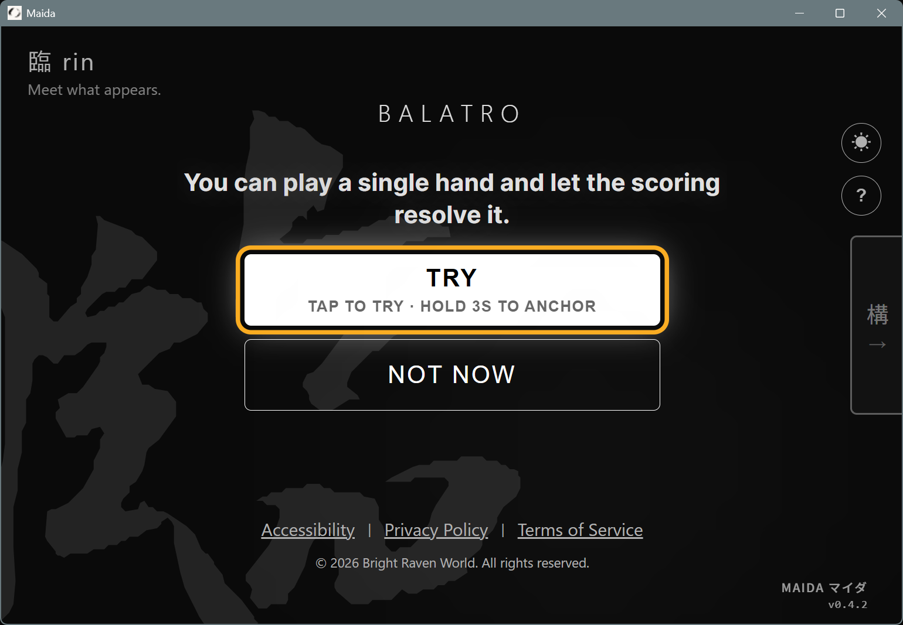
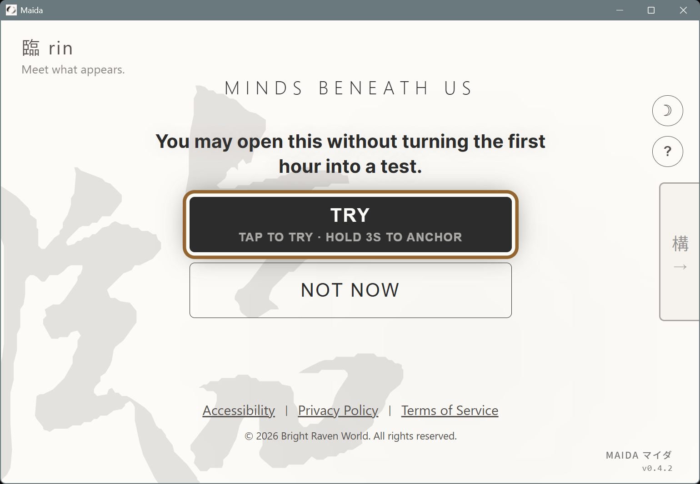
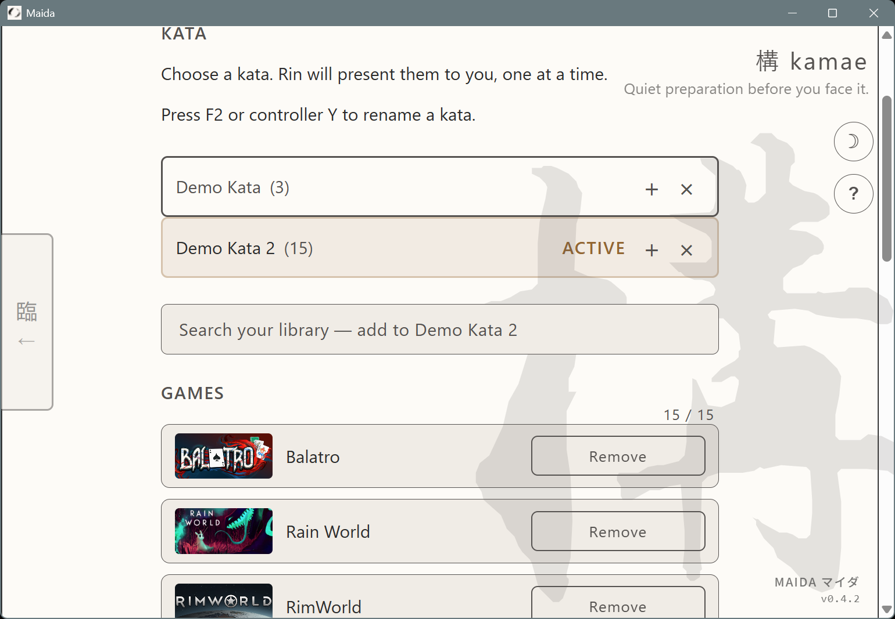
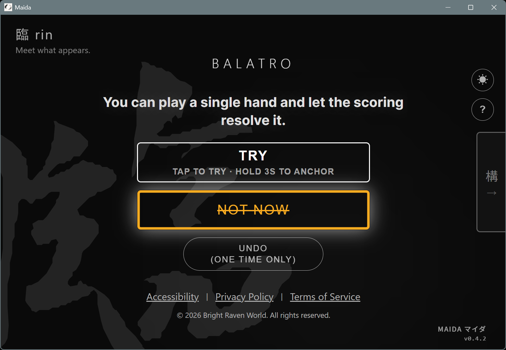
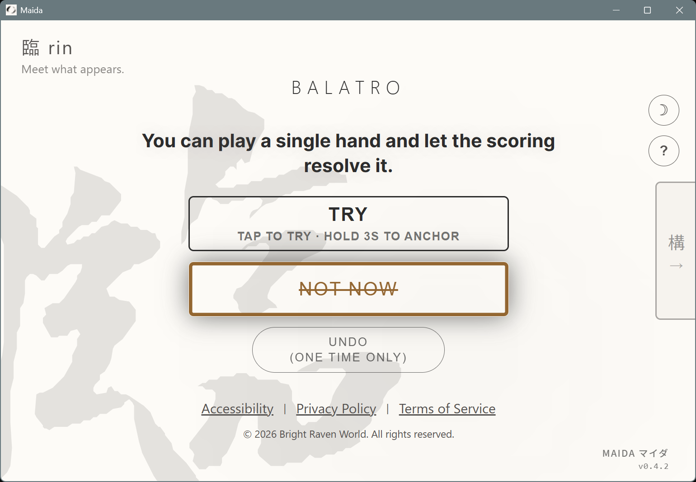

You stared at your library for thirty minutes, then closed it. ライブラリを30分見つめて、閉じた。 你盯著遊戲庫看了三十分鐘，然後把它關掉。 你盯着游戏库看了三十分钟，然后把它关掉。
ma · the space you pass through ま · 通り過ぎる間 ま · 你經過的那段時空 ま · 你经过的那段时空
You own hundreds of games. Tonight you launched the one you've already finished twice. Not because it's the best. Because choosing was harder than playing. 何百本もある。今夜また、もうクリアしたあのゲームを起動した。一番だからじゃない。選ぶことのほうが、遊ぶことより疲れるから。 你有幾百款遊戲。你今晚又打開了那款已經玩過很多次的。不是因為它最好。是因為選擇本身讓你太累了。 你有几百款游戏。今晚你又打开了那款已经通关过的。不是因为它最好。是因为选择本身让你太累了。
Maida doesn't help you choose better. Maida lets you stop choosing. Maida はより良い選択を助けない。選ぶことを止めさせる。 Maida 不幫你選得更好。Maida 讓你不用選。 Maida 不帮你选得更好。Maida 让你不用选。
Your time to play shouldn't be stuck with choices. 遊ぶための時間が、選択で潰れるなんておかしい。 留給遊戲的時間，不應該浪費在選擇上。 留给游戏的时间，不应该浪费在选择上。
This isn't laziness. It isn't pickiness. It isn't that you don't love games anymore. 怠けじゃない。飽きたわけでもない。ゲームが嫌いになったわけでもない。 這不是懶惰。不是你變挑。不是你不再愛玩遊戲了。 这不是懒惰。不是你变挑了。不是你不爱玩游戏了。
More options doesn't always mean more freedom. Sometimes it just means paralysis. 選択肢が多いほど自由とは限らない。ただ麻痺するだけのこともある。 選項越多，不一定越自由。有時候只是更麻痺。 选项越多，不一定越自由。有时候只是更麻痹。
You don't need more information to decide. You need fewer things to decide between. 決めるための情報がもっと必要なんじゃない。決める対象がもっと少なければいい。 你不是需要更多資訊來決定。你需要更少東西讓你決定。 你不是需要更多信息来做决定。你需要更少的东西让你去选。
Maida is a brief 間 (ma). Then you play. Maida は、束の間 (ま)。そして、遊ぶ。 Maida 是短暫的「間」。然後去玩。 Maida 是短暂的「间」。然后去玩。
Maida shows you one game at a time. From what you already have installed. You answer: play it now, or not now. Maida は一度に一本だけ見せる。インストール済みのゲームの中から。答えは二つ：今やる、か、今はやらない。 Maida 每次只給你看一款遊戲。從你已經安裝的遊戲中。你回答：現在玩，或現在不要。 Maida 每次只给你看一款游戏。从你已经安装的游戏中。你回答：现在玩，或现在不要。
It's not a recommendation engine. Not a backlog tracker. Not a system that pretends to know you better than you know yourself. レコメンドエンジンじゃない。バックログ管理ツールでもない。あなたより「あなたをわかっている」ふりをするシステムでもない。 它不是推薦引擎。不是待辦清單。不是一個假裝比你更懂你的系統。 它不是推荐引擎。不是待办清单。不是一个假装比你更懂你的系统。


Eighty options become one. 80の選択肢が、1つになる。 把 80 個選項變成 1 個。 把 80 个选项变成 1 个。
Step 1 手順1 第一步 第一步
Open Maida. It reads your locally installed Steam games. Maidaを開く。ローカルのSteamゲームを読み取る。 打開 Maida。它讀取你本機已安裝的 Steam 遊戲。 打开 Maida。它读取你本机已安装的 Steam 游戏。
Step 2 手順2 第二步 第二步
Optionally, narrow the field. Use Kata to face only what you're willing to face today. 必要なら場を整える。型で、今日向き合いたいものだけに絞る。 如果你想，先整理場域。用型，只面對你今天願意面對的。 如果你想，先整理场域。用型，只面对你今天愿意面对的。


Step 3 手順3 第三步 第三步
One game appears. Not a list. Not a comparison. Just one. 一本が現れる。リストじゃない。比較表でもない。ただ一本。 一款遊戲出現。不是清單。不是比較表。就是一款。 一款游戏出现。不是清单。不是比较表。就是一款。
Step 4 手順4 第四步 第四步
Then it steps back. A tool that did its job disappears quietly. そして退く。仕事を終えた道具は、静かに消える。 然後它退開。完成工作的工具安靜地退下。 然后它退开。完成工作的工具安静地退下。


What it won't do matters as much as what it does. やらないことは、やることと同じだけ重い。 它刻意不做的事，和它做的事一樣重要。 它刻意不做的事，和它做的事一样重要。
No recommendations レコメンドなし 沒有推薦 没有推荐
The game you see is one you already own. Nothing "trending", nothing "suggested for you". 表示されるのはあなたが既に所有しているゲームだけ。「人気」も「おすすめ」もありません。 出現的遊戲是你本來就擁有的。沒有「熱門」，沒有「你可能喜歡」。 出现的游戏是你本来就拥有的。没有「热门」，没有「你可能喜欢」。
No tracking 追跡なし 沒有追蹤 没有追踪
Maida only knows your TRY / Not Now choices, and those stay on your device. Maida が知るのは TRY か Not Now の選択のみで、端末内に留まります。 Maida 只知道你按了 TRY 還是 Not Now，這個紀錄只在你的裝置上。 Maida 只知道你按了 TRY 还是 Not Now，这个记录只在你的设备上。
No streaks, no achievements ストリークなし、実績なし 沒有連續登入，沒有成就 没有连续登录，没有成就
Nothing you can lose by not opening the app. 開かなかったことで失うものはありません。 沒有不開就會扣的分數。 没有不开就会扣的分数。
No notifications 通知なし 沒有通知 没有通知
Nothing calling you back. 呼び戻すものはありません。 沒有叫你回來的東西。 没有叫你回来的东西。
One anonymous ping on launch carries three fields: a random ID, days since install, and app version. Nothing else. Full details in the Privacy Policy. 起動時の匿名 ping は 3 フィールドだけ：ランダム ID、インストール経過日数、アプリバージョン。それ以外は送られません。詳細はプライバシーポリシーに。 啟動時會送一個匿名 ping，只有三個欄位：隨機 ID、安裝天數、應用版本。沒別的。完整說明在隱私政策。 启动时会送一个匿名 ping，只有三个字段：随机 ID、安装天数、应用版本。没别的。完整说明在隐私政策。
Maida shouldn't become a habit. Less time here, more time playing. That's the whole design. Maida は習慣になってはいけません。ここで過ごす時間を減らし、遊ぶ時間を増やす。それだけが目的です。 Maida 不該變成你的習慣。在這裡花越少時間、玩遊戲花越多時間。這就是全部的設計目的。 Maida 不该变成你的习惯。在这里花越少时间、玩游戏花越多时间。这就是全部的设计目的。
For everyone who finds starting harder than playing. 遊ぶより「始める」ほうが重い、そんなあなたへ。 給每個覺得「開始」比玩還累的人。 给每个觉得「开始」比玩还累的人。
- State changes (TRY, Not Now, anchor) are announced through your screen reader. Primary target: NVDA on Windows. Orca on Linux: partial support. 状態変化（TRY、Not Now、アンカー）はスクリーンリーダーで読み上げられます。主な対象：Windows の NVDA。Linux の Orca は部分対応。 狀態變化（TRY、Not Now、anchor）會透過螢幕閱讀器朗讀。主要測試對象：Windows 的 NVDA。Linux 的 Orca 部分支援。 状态变化（TRY、Not Now、anchor）会透过屏幕阅读器朗读。主要测试对象：Windows 的 NVDA。Linux 的 Orca 部分支持。
- Designed to be navigated entirely with D-pad, stick, or keyboard — whether you're on a handheld, can't use a mouse, or just prefer not to. D-pad、スティック、キーボードだけで全体を操作できるよう設計されています。ハンドヘルドでも、マウスが使えなくても、使いたくないだけでも。 設計上可用 D-pad、搖桿、鍵盤完整操作。不管你在手持裝置上、用不了滑鼠、還是單純不想用。 设计上可用 D-pad、摇杆、键盘完整操作。不管你在手持设备上、用不了鼠标、还是单纯不想用。
- Starting a game takes a deliberate hold, not a tap. Built to absorb shaky fingers, bumped gamepads, or the occasional cat paw. ゲーム起動には意図的な長押しが必要。手が震える日、ポケットで当たったゲームパッド、キーボードの上を歩く猫、こうした状況を吸収するように作られています。 啟動遊戲需要刻意的長按，不能只是點擊。設計上用來吸收手抖、口袋誤觸的手把、或走過鍵盤的貓。 启动游戏需要刻意的长按，不能只是点击。设计上用来吸收手抖、口袋误触的手柄、或走过键盘的猫。
- If motion makes you dizzy, set reduced motion once in your OS. Maida respects it, and there is no in-app toggle to accidentally desync from your system. 動きで気分が悪くなる方は、OS の「動きを減らす」設定を入れてください。Maida はそれを尊重し、システムと食い違いうるアプリ側トグルは用意していません。 如果動畫讓你頭暈，在 OS 設定一次「減少動態效果」即可。Maida 尊重這個設定，app 內沒有會跟系統打架的開關。 如果动画让你头晕，在 OS 设置一次「减少动态效果」即可。Maida 尊重这个设定，app 内没有会跟系统打架的开关。
-
Focus stays visible for keyboard and gamepad input. Chromium's default hides it for gamepad, so Maida pairs
:focuswith:focus-visibleto keep the ring showing. フォーカス枠はキーボード／ゲームパッド入力で見えるようにしています。Chromium の初期設定ではゲームパッド操作時に枠が消えるため、Maida は:focusと:focus-visibleを両方指定して表示を維持しています。 鍵盤跟手把操作時焦點框會保持可見。Chromium 預設會在手把輸入時隱藏，Maida 同時指定:focus跟:focus-visible讓框保留。 键盘跟手柄操作时焦点框会保持可见。Chromium 默认会在手柄输入时隐藏，Maida 同时指定:focus跟:focus-visible让框保留。
Full accessibility statement → 完全なアクセシビリティ声明 → 完整無障礙聲明 → 完整无障碍声明 →
Tonight, don't just stare at the library. 今夜は、ライブラリを眺めるだけで終わらせない。 今晚別再盯著庫看了。 今晚别再盯着库看了。
Free. No account. Windows + Linux. Handheld-friendly. 無料。アカウント不要。Windows + Linux。ハンドヘルド対応。 免費。不需要帳號。Windows / Linux。手持裝置友善。 免费。不需要账号。Windows / Linux。掌机友好。
Download on itch.io itch.io でダウンロード 在 itch.io 下載 在 itch.io 下载Also available on GitHub → GitHub からも入手可能 → 也可從 GitHub 取得 → 也可从 GitHub 获取 →